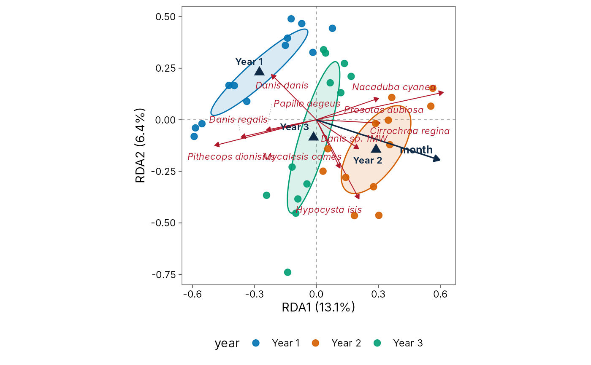
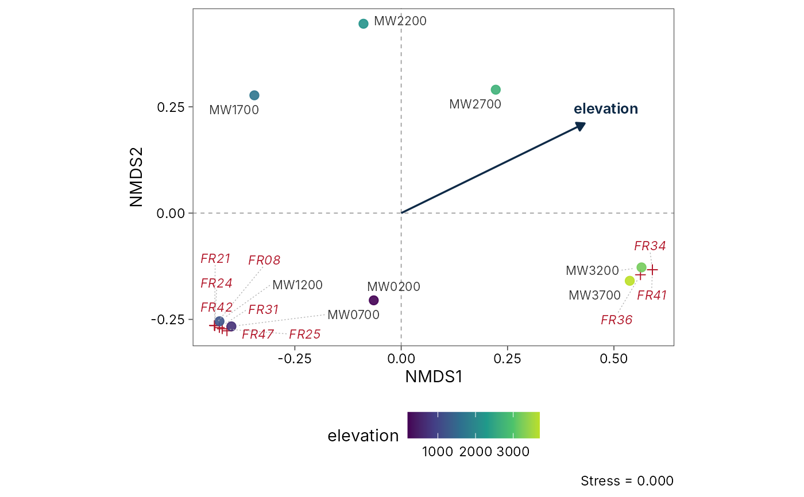

Draws a publication-quality ordination diagram in the style of CANOCO (ter Braak and Smilauer 2012): a biplot of sites and species for unconstrained methods and a triplot with environmental arrows for constrained ones, with equal axis scaling, zero lines and the variation explained by each axis in the axis titles. Species are drawn as arrows for linear methods (PCA, RDA, PCoA, db-RDA), whose scores are directions of increase, and as points for unimodal methods (CA, CCA, DCA) and NMDS, whose scores are optima.
Usage
# S3 method for class 'td_ordination'
autoplot(
object,
axes = c(1, 2),
colour = NULL,
shape = NULL,
group = NULL,
sites = TRUE,
site_labels = FALSE,
species = 10,
arrows = TRUE,
ellipse = c("none", "sd", "ci", "se"),
level = 0.95,
hull = FALSE,
spider = FALSE,
palette = "okabe_ito",
theme = theme_tidydiversity(grid = "none"),
...
)Arguments
- object
A
td_ordinationfromord_fit().- axes
The two axes to plot.
- colour, shape
Site variables (unquoted column names) to map to point colour and shape, such as
colour = elevation. Discrete variables also define the groups for ellipses, hulls and spiders.- group
A site variable defining groups for ellipses, hulls and spiders, if different from
colour.- sites
Draw the sites.
- site_labels
Label the sites.
- species
Number of species to draw and label, those best represented in the plotted plane (longest scores). Use
Inffor all and0for none.- arrows
Draw environmental arrows and factor centroids.
- ellipse
"none"(the default),"sd","ci"or"se".- level
Coverage of
"ci"and"se"ellipses.- hull
Draw convex hulls around groups.
- spider
Join each site to its group centroid.
- palette
Colours for groups:
"okabe_ito"or"grey"; continuous variables use the viridis scale.- theme
A ggplot2 theme, by default
theme_tidydiversity().- ...
Not used.
Details
Groups of sites can be summarised with ellipses, convex hulls or
spiders. Ellipses follow vegan::ordiellipse(): "sd" covers one
standard deviation of the points, "ci" the region expected to hold
level of the points, and "se" a level confidence region for the
group centroid.
How to read the lines:
red arrows from the origin: species (linear methods only);
dark arrows from the origin: quantitative environmental variables;
dark triangles: centroids of factor levels (for example years);
coloured outlines: ellipses or convex hulls around groups of sites, and, with
spider = TRUE, lines from each group centroid to its sites;faint dotted grey lines: label leaders, joining a label that had to be moved to avoid overlap to its point. They carry no information.
Every option is an argument, and the result is an ordinary ggplot that
can be changed further with +.
References
ter Braak, C. J. F. and Smilauer, P. (2012). Canoco reference manual and user's guide: software for ordination (version 5.0). Microcomputer Power, Ithaca, USA.
Examples
library(ggplot2)
butterflies <- wanang_butterflies
butterflies$year <- factor(paste("Year", butterflies$year))
# RDA triplot: days coloured by year, one-SD ellipses
ord <- ord_fit(butterflies, method = "rda", formula = ~ year + month)
autoplot(ord, colour = year, ellipse = "sd")

# NMDS of frogs along Mt Wilhelm, elevation as colour
nmds <- ord_fit(png_frogs, method = "nmds", formula = ~elevation)
#> Warning: stress is (nearly) zero: you may have insufficient data
#> Warning: skipping half-change scaling: too few points below threshold
autoplot(nmds, colour = elevation, site_labels = TRUE, species = 10)
